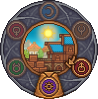
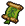
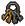

Days


Days in Graveyard Keeper 2 are represented by their own icons, each associated with one of the seven deadly sins. Each day lasts 7.5 minutes, and a full week lasts 45 minutes. The current day can be seen at any time in the upper-left corner of the screen.
Each day has an associated activity, along with a characteristic sound and background. In order, the days are:
| Icon | Name | Activity |
|---|---|---|
| Gluttony | PR Machine | |
| Sloth | Town Battles | |
| Lust |  Green Scroll for Linda Keys for Looters for Davy the Dagger | |
| Envy | Create new zombies in the Resurrection Lab New | |
| Pride | Town orders in the Town Warehouse | |
| Wrath | Sermons in the Church |